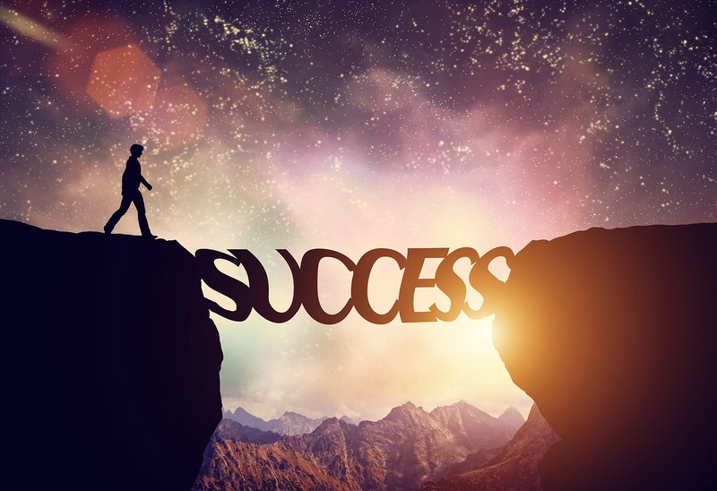

The Coding Journey
Today's Blog Post 3/20/23
This past week has been amazing for my programming. I learned html tables alongside html forms and advanced css. The hardest part for me in the past week has definitely been regular expressions. The moment I came across my first pattern that being an email address pattern I was in shock considering its length. However, I hit a milestone in regular expressions today! I managed to memorize the pattern for the email address and the pattern for US phone numbers as well! I can also do the username and password patterns. Patterns are easily the most overwhelming part of forms given the length of some of them, but knowing these is a great step in the right direction for me and another struggle of mine in forms at first was javascript form validation, but I grew to learn that for the most part atleast what I have learned so far it is actually pretty simple to complete. Today, I started a project where I am making a sign up form and I am having a blast with it as I am making an lgbtq focused sign up form for the project and so far everything is going great, but I hit a roadblock at one point as I realized I forgot how to make the dropdown lists, but I went back to my learning resource and got a refresher on how it works. I decided to summarize what I did in an effort to show I know what is going on and for future reference. I plan on finishing the project sometime this week, but I don't know when as I want to go all out to make it as nice as possible. I hope it can be a portfolio piece.
I've learned something in the past several weeks that I have been programming. Anytime you start a project, seek to make it the best it can possibly be based on your knowledge in web development. That project could be your gateway to your first job or your first contact or even a bigger love for web development as a whole. I have a lot of ideas for this sign up form project and I know I can make it work because I am determined to make it work and if I have to get assistance at times then I will do it to assure I learn everything I possibly can. Projects as a whole are learning experiences and can by extension be a life lesson. I am learning through this sign up form project that programming is indeed a collaborative field and often times is a team effort even if you don't have others doing a project with you. It is always a team effort because we as a workforce struggle on a daily basis because none of us know everything. We need assistance. We sometimes need motivation to keep pushing forward. You know what all of these things have in common? All of this is completely okay. I have been struggling to seek help when I need it because I end up feeling bad about myself knowing I didn't push on harder to do it on my own. However, programming as a whole is a team effort and we are not knowledge banks. We will struggle often and we will think less of ourselves every once in awhile, but in the end we will love our career more knowing we did push through and we did succeed because that births confidence and by extension a higher self esteem in general. We got this. We can do this. We will succeed in every aspect of our life and then some. We are an amazing breed of workers and nothing is going to take that away from us. Until next time my fellow programmers!
Hello, My First Blog Post 3/13/23
Hello everyone, this is my very first blog post. This blog's goal is to document my journey as a programmer. The highs and the lows. I guess this first post could be my story on how I got onto this career path. In my last year of high school, 2019, I decided I wanted to pursue photography after seeing photos photos of stars online and thinking of how beautiful the milky way pictures were. I got accepted into the photography course at my local community college and after high school I began attending community college in the fall and I loved the photograhy program.
I loved the art aspect of photography and seeing my experience reflect
on my pictures. I grew to love art as a whole knowing that my only limit
is my knowledge or so I thought. I don't drive currently as I have adhd
and aspergers and I eventually began to realize that was heavily
limiting my potential as a photographer and unfortunately it got worse.
My favorite field of photography became photojournalism and I decided to
attend Western Kentucky University's photojournalism program and while I
loved it I began to realize even more how much of an overwhelming and
wrong choice this was for me. Did I love what I was doing? Yes very much
so. However, I struggled realizing just how expensive everything was
especially in comparison to the expected salary of a photojournalist
alongside the elephant in the room, without a driver's license it is
next to impossible to take full advantage of photojournalism
opportunities and while I did finish the first semester with a 4.0 I
just felt too overwhelmed to continue due to the expenses, the lack of a
driver's license and due to my autism the unpredictable schedule would
ruin me mentally and at that point I decided I had to find another
career path. 
I did some research and found one of the best jobs in my situation would be to become a programmer. I can work from home, the salary is great, the schedule is relatively if not completely consistent and I love working with computers. I checked out multiple bootcamps and the reason I didn't sign up for any was the prices and soon after I discovered the Odin Project. I came to realize that the Odin Project was the perfect program for me to take due to the ability to work at my own pace and how thorough the program is with its teachings.
In the present day, it has been 2 months since I started my journey with the Odin Project and today I am embarking on the next part of my journey. During my time with the foundations program I made a recipes list with html and css, a landing page with html and css, a rock paper scissors game with html, css and javascript, an etch-a-sketch with html, css, and javascript and a calculator app using html, css, and javascript This past weekend I finalized my projects for the odin project's foundations course and while I plan to return to them to make them better pieces for my portfolio as I gain more experience, for now I am moving on to the full stack javascript program. I struggled a lot through the foundations course, in particular flex box and the javascript section, but I did it with a lot of help and through that help I was able to retain the information I was taught.
Throughout my experience in the foundation program I experienced a lot of mixed emotions. A lot of happy, a lot of questioning myself and a lot of sadness. At times I thought what I was doing wasn't worth it and I felt very dumb knowing I am struggling even on the basics, but I persisted and kept pushing through. I still struggle with this, but I often times refuse to seek assistance on a problem I have been trying to solve for 1-2 hours because I struggle to not feel bad about myself when I have to get help on something and I instead keep struggling and while it has helped mold my mindset into someone that is a problem solver albeit a beginner one, it is not healthy to refuse help especially when you have been struggling for an hour or longer. The hardest project for this particular experience was the calculator app. I kept questing my career choice thinking I messed up in dropping out and that I can't do this and that I am truly failing in life with my choice in career path. I questioned my ability to program knowing I had to get a lot of help on my calculator app and sure I got a lot of help on the etch-a-sketch as well, but I was able to retain all of that information through repetition, but the calculator app was a whole other beast for me. I struggle a lot with arrays and placement of code which is what the calculator app taught me, but the most important thing the calculator app taught me was this. It is okay to struggle. It is okay to be stressed out on something when you are new. We all have to start somewhere and everyone learns differently. Never give up on your dreams. Even when you get knocked down on your butt and struggle to get back up never ever give up if what you are doing is truly what you want to do. I fell in love with programming the moment I began css. Sure html was great, but css was when my world exploded in possibilities. As mentioned earlier, I love art and I realized sometihng in programming. Unlike photography where I was often limited by my inability to drive, I can do programming from anywhere. My only limit in programming is my knowledge of the craft. That's why I kept pushing even when I was at my wits end with the calculator app. I realized my dreams are in becoming a programmer now. I am in the mindset of an aspiring junior developer now, not an aspiring photographer. We solve problems and we get assistance when those problems have us backed up against a metaphorical wall. The next part of my journey is the Odin Project's full stack Javascript program and while I may not feel fully prepared to embark on the full stack program I know I can do it. I will work as hard as possible to accomplish my eventual goal, that being becoming a front-end developer.
I hope my blog can help to motivate others to push forward in
programming even when they are losing hope and maybe this will even help
others outside of the programming field. I hope my blog can be that
powerful and I hope this blog can make a difference. Keep pushing
through. Never give up. Until next time.